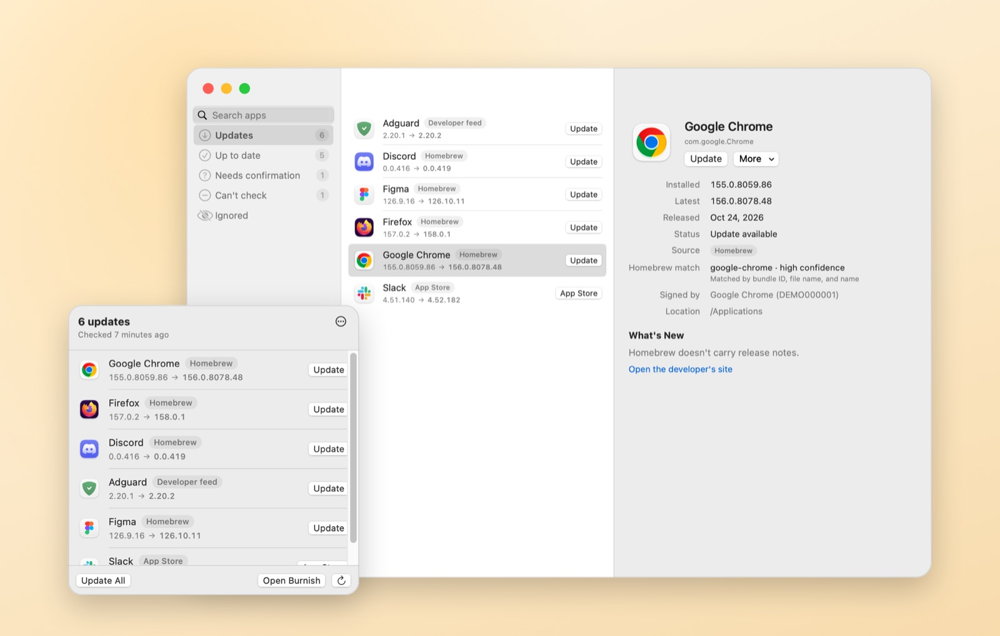
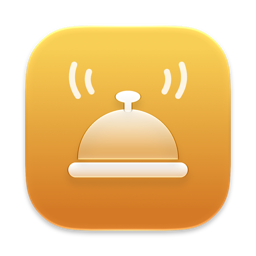

Finds updates anywhere
Each app is checked against the best source it has: its developer's own feed first, the App Store, then Homebrew's catalogue, however you installed it.
Burnish finds updates for apps from anywhere (direct downloads, the App Store, Homebrew) and installs them carefully, right from your menu bar. Free and open source.
Version {{VERSION}} · macOS 14 or later · Apple silicon and Intel · Free
Finds updates from

An updater replaces other apps on your Mac, so it should be the most careful app you own.
Each app is checked against the best source it has: its developer's own feed first, the App Store, then Homebrew's catalogue, however you installed it.
Not sure which app is which? It asks instead of raising a false alarm. Zero false alerts on our 50-app test, checked on every build.
The developer's signature, the published checksum, the same team as your copy, Gatekeeper. Any check fails, nothing changes.
Every old version goes to the Trash, never deleted. Changed your mind? One click brings it back.
One check a day, at most one notification, a desktop widget if you like. Developers' own updaters get their turn too.
No account, no analytics, no crash reports. The only requests are the ones it takes to ask for updates, and they're all listed.
Every install keeps all eight, or it doesn't happen and you get the developer's download page instead.
{{RELEASE_HEADLINE}}
Download Burnish.dmg, open it and drag Burnish into Applications.
Burnish isn't notarised by Apple yet, so macOS blocks the first launch. Click Done, then System Settings → Privacy & Security → Open Anyway.
Turn on App Management when Burnish asks. Finding updates works without it; installing needs it.
xattr -dr com.apple.quarantine /Applications/Burnish.app
Nowhere it doesn't have to. These are the only places Burnish talks to:
That's what the eight promises are for. Every check runs before your app is touched, each one has an automated test that feeds it a bad file and proves the install is refused, and the old version always goes to the Trash.
No. Apps you installed with Homebrew are shown but left to brew upgrade, unless you ask Burnish to run it for you.
Burnish finds their updates and hands them to the App Store: several at once open the Updates page, where Apple's Update All does them together.
Some apps have no public update source. Burnish says so rather than guessing, and tells you when a developer's own updater looks after the app instead.
No, and it never will: no account, no subscription, no ads. It's MIT licensed, so you can read every line.

Your apps, kept current, without the dozen update windows.
Download Burnish {{VERSION}}